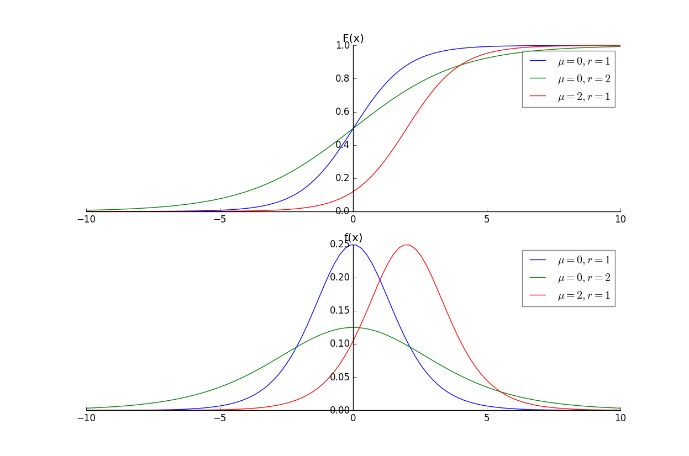
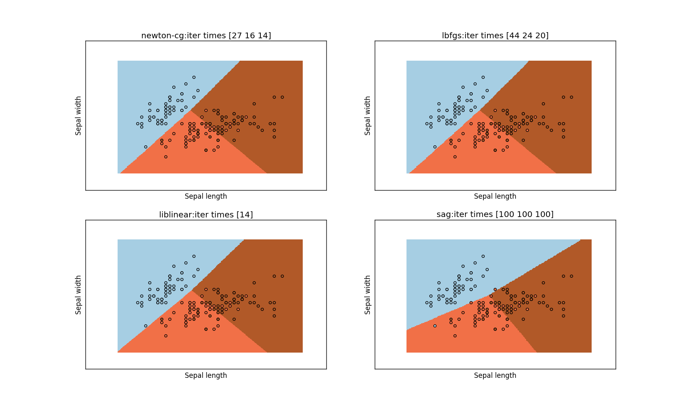
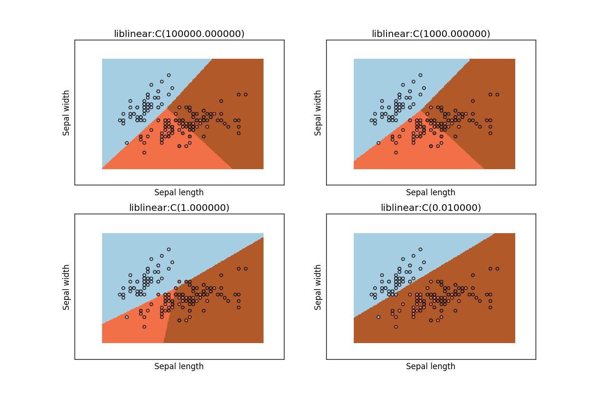
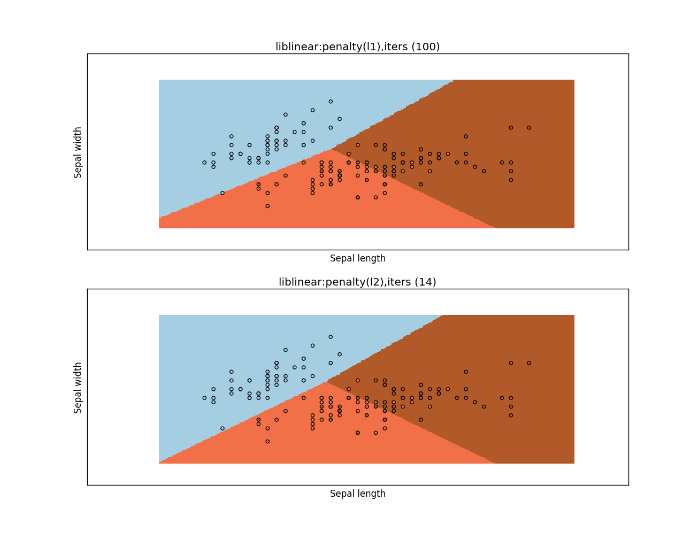

1.logistic回归是统计学习中的经典分类方法。
最大熵是概率模型学习的一个准则，将其推广到分类问题得到最大熵模型。
2.logistic 分布：假设 X 为连续随机变量， X 服从 logistic 分布是指 X 具有下列分布函数和密度函数： $$ F(x)=P(X \le x)=\frac{1}{1+e^{-(x-\mu)/r{}}}\\ f(x)=F'(X)=\frac{e^{-(x-\mu)/r{}}}{r(1+e^{-(x-\mu)/r{}})^{2}} $$ 其中 \(\mu\) 为位置参数， \(r \gt 0\) 为形状参数。
import numpy as np
import matplotlib.pyplot as plt
def F_X(x,mu,r):
return 1/(1+np.e**(-(x-mu)/r))
def f_X(x,mu,r):
return np.e**(-(x-mu)/r)/(r*((1+np.e**(-(x-mu)/r))**2))
fig=plt.figure()
ax1=fig.add_subplot(2,1,1)
ax2=fig.add_subplot(2,1,2,sharex=ax1)
x=np.linspace(-10,10,100)
#### 绘制 F(x)
ax1.plot(x,F_X(x,0,1),label=r'$\mu=0, r=1$')
ax1.plot(x,F_X(x,0,2),label=r'$\mu=0, r=2$')
ax1.plot(x,F_X(x,2,1),label=r'$\mu=2, r=1$')
ax1.set_title("F(x)")
ax1.legend(framealpha=0.5)
#### 绘制 f(x)
ax2.plot(x,f_X(x,0,1),label=r'$\mu=0,r=1$')
ax2.plot(x,f_X(x,0,2),label=r'$\mu=0,r=2$')
ax2.plot(x,f_X(x,2,1),label=r'$\mu=2,r=1$')
ax2.set_title("f(x)")
ax2.legend(framealpha=0.5)
### 平移坐标轴
ax1.spines['right'].set_color('none')
ax1.spines['top'].set_color('none')
ax1.xaxis.set_ticks_position('bottom')
ax1.spines['bottom'].set_position(('data',0))
ax1.yaxis.set_ticks_position('left')
ax1.spines['left'].set_position(('data',0))
ax2.spines['right'].set_color('none')
ax2.spines['top'].set_color('none')
ax2.xaxis.set_ticks_position('bottom')
ax2.spines['bottom'].set_position(('data',0))
ax2.yaxis.set_ticks_position('left')
ax2.spines['left'].set_position(('data',0))
plt.show()

3.二项 logistic 回归模型：它是如下的条件概率分布： $$ P(Y=1/X=\mathbf x)=\frac{\exp(\mathbf{w\cdot x}+b)}{1+\exp(\mathbf{w\cdot x}+b)}\\ P(Y=0/X=\mathbf x)=\frac{1}{1+\exp(\mathbf{w\cdot x}+b)} $$ 其中 \(\mathbf x \in \mathbb R^{n}\) 为输入； \(Y\in \{0,1\}\) 为输出。 \(\mathbf w \in \mathbb R ^{n}, b \in \mathbb R\) 为参数。称 \(\mathbf w\) 为权值向量，\(b\) 为偏置。\(\mathbf{w\cdot x}\) 为\(\mathbf w\) 与 \(\mathbf x\) 的内积。
4.二项 logistic 回归模型的物理意义：
令事件的几率为：一个事件发生的概率与不发生的概率的比值。若事件发生的概率为 p ，则该事件的几率是 ： \(\frac {p}{1-p}\)，则事件的对数几率为： \(\text{logit}(p)=\log \frac{p}{1-p}\)。
对于 logistic 回归，有 \(Y=1\) 的对数几率为：\(\log\frac{P(Y=1/\mathbf x)}{P(Y=0/\mathbf x)}=\mathbf {w\cdot x}\)。 即 \(Y=1\) 的对数几率是输入 \(\mathbf x\) 的线性函数。
5.logistic 回归模型参数估计：给定训练数据集 \(T=\{(\mathbf x_1,y_1),(\mathbf x_2,y_2),\cdots,(\mathbf x_N,y_N)\}\)，其中 \(\mathbf x_i \in \mathbb R^{n}, y_i \in \{0,1\}\)。可以用极大似然估计法估计模型参数，从而得出模型。
令 \(P(Y=1/\mathbf x)=\pi(\mathbf x),P(Y=0/\mathbf x)=1-\pi(\mathbf x)\)，则似然函数为： $$\prod_{i=1}^{N}[\pi(\mathbf x_i)]^{y_i}[1-\pi(\mathbf x_i)]^{1-y_i}$$
对数似然函数为： $$ L(\mathbf w)=\sum_{i=1}^{N}[y_i\log\pi(\mathbf x_i)+(1-y_i)\log(1-\pi(\mathbf x_i))]\\ =\sum_{i=1}^{N}[y_i\log\frac{\pi(\mathbf x_i)}{1-\pi(\mathbf x_i)}+\log(1-\pi(\mathbf x_i))] $$
又由于 \(\pi(\mathbf x)=\frac{\exp(\mathbf{w\cdot x})}{1+\exp(\mathbf{w\cdot x})}\)，因此： $$ L(\mathbf w)=\sum_{i=1}^{N}[y_i(\mathbf{w\cdot x}_i)-\log(1+\exp(\mathbf w \cdot \mathbf x_i))] $$
对 \(L(\mathbf w)\) 求极大值，得到 \(\mathbf w\) 的估计值。设估计值为 \(\hat{\mathbf w}\)，则 logistic 回归模型为： $$ P(Y=1/X=\mathbf x)=\frac{\exp(\mathbf{\hat w\cdot x})}{1+\exp(\mathbf{\hat w\cdot x})}\\ P(Y=0/X=\mathbf x)=\frac{1}{1+\exp(\mathbf{\hat w\cdot x})} $$
通常用梯度下降法或者拟牛顿法来求解该最大值问题
6.可以推广二类分类的 logistic 回归模型到多类分类问题：
设离散型随机变量 Y 的取值集合为： \(\{1,2,\cdots,K\}\)，则多项 logistic 回归模型为： $$ P(Y=k/\mathbf x)=\frac{\exp(\mathbf w_k \cdot \mathbf x)}{1+\sum_{k=1}^{K-1}\exp(\mathbf w_k \cdot \mathbf x)},k=1,2,\cdots,K-1\\ P(Y=K/\mathbf x)=\frac{1}{1+\sum_{k=1}^{K-1}\exp(\mathbf w_k \cdot \mathbf x)},\mathbf x \in \mathbb R^{n+1},\mathbf w_k \in \mathbb R^{n+1} $$ 其参数估计方法类似二项 logistic 回归模型
1.最大熵原理：学习概率模型时，在所有可能的概率模型（即概率分布）中，熵最大的模型是最好的模型。
通常还有其他约束条件来确定概率模型的集合，因此最大熵原理为：在满足约束条件情况下，选取熵最大的模型
设随机变量 X 的概率分布为 P(X)，熵为：\(H(P)=-\sum_X P(X)\log P(X)\)，可以证明：\(0 \le H(P) \le \log |X| \) ，其中 \(|X|\) 为 X 的取值的个数。当且仅当 X 的分布为均匀分布是，有 \(H(P)=\log |X|\)
即 X 服从均匀分布时， 熵最大。直观理解最大熵原理：在满足已知条件前提下，如果没有更多的信息，则那些不确定部分都是“等可能的”。熵最大化来表示等可能性
2.最大熵原理选取熵最大的模型，而决策树的划分目标选取熵最小的划分。原因在于：
3.最大熵模型：设分类模型是一个条件概率分布 \(P(Y/X=\mathbf x),X \in \mathcal X \subseteq \mathbb R^{n}\) 为输入， \(Y \in \mathcal Y\) 为输出。
给定一个训练数据集 \(T=\{(\mathbf x_1,y_1),(\mathbf x_2,y_2),\cdots,(\mathbf x_N,y_N)\}\)，学习的目标是用最大熵原理选取最好的分类模型。
我们可以假设这两个期望相等，即：\(E_{\tilde P}(f)=E_{P}(f)\)。我们将这个作为模型学习的约束条件
4.最大熵模型的学习：就是求解最大熵的过程。该过程可以形式化为约束最大化问题：
即求得条件概率 \(P(y/\mathbf x)\)
对给定的训练数据集 \(T=\{(\mathbf x_1,y_1),(\mathbf x_2,y_2),\cdots,(\mathbf x_N,y_N)\}\)，以及特征函数 \(f_i(\mathbf x,y),i=1,2,\cdots,n\) 最大熵模型的学习等价于约束最优化问题： $$ \max_{P\in \mathcal C} H(P)=-\sum_{\mathbf x,y}\tilde P(\mathbf x)P(y/\mathbf x)\log P(y/\mathbf x)\\ s.t. E_P(f_i)=E_{\tilde P}(f_i),i=1,2,\cdots,n\\ \sum_y P(y/\mathbf x)=1 $$ 将其转化为最小化问题： $$ \min_{P\in \mathcal C} -H(P)=\sum_{\mathbf x,y}\tilde P(\mathbf x)P(y/\mathbf x)\log P(y/\mathbf x)\\ s.t. E_P(f_i)-E_{\tilde P}(f_i)=0,i=1,2,\cdots,n\\ \sum_y P(y/\mathbf x)=1 $$
其中\(\tilde P(\mathbf x)，E_{\tilde P}(f_i)\) 是已知的， \(P(y/\mathbf x)， E_P(f_i)\) 是未知的。
总结为：先求对偶问题的内部极小化，得到 \(\Psi(\mathbf w)\) 函数，以及极值点 \(P_\mathbf w(y/\mathbf x)\)；再求 \(\Psi(\mathbf w)\) 函数的极大值，得到 \(\mathbf w^{*}\) 。最后将 \(\mathbf w^{*}\) 代入 \(P_\mathbf w(y/\mathbf x)\) 得到最终模型 \(P^{*}\)
5.可以证明： \(\Psi(\mathbf w)\) 函数的最大化，等价于最大熵模型的极大似然估计。
已知训练数据的经验概率分布为 \(\tilde P(\mathbf x,y)\)， 条件概率分布为 \(P(y/\mathbf x)\) 的对数似然函数为： \(\log \prod_{\mathbf x,y}P(y/\mathbf x)^{\tilde P(\mathbf x,y)}=\sum_{\mathbf x,y}\tilde P(\mathbf x,y) \log P(y/\mathbf x)\)
这里 \(\tilde P(\mathbf x,y)\) 作为指数的原因：假设 某个 \(\mathbf x_i,y_i\) 出现了 k 次，则条件概率中， \(P(y/\mathbf x)\) 的指数应该是 k（频数） 。但是如果对所有的 \(\mathbf x,y\) 取遍历乘法，指数取 \(\tilde P(\mathbf x,y)\) （频率）
再利用:\(P_\mathbf w(y/\mathbf x)=\frac{1}{Z_\mathbf w(\mathbf x)} \exp(\sum_{i=1}^{n}w_i f_i(\mathbf x,y))\) 代入，最后化简合并，最终发现它就是 \(\Psi(\mathbf w)\)
6.最大熵模型与 logistic 回归模型有类似的形式。它们又称为对数线性模型。
7.改进的迭代尺度法(improved iterative scaling:IIS)：
改进的迭代尺度法是一种最大熵模型学习的最优化算法。
已知最大熵模型为： \(P_\mathbf w(y/\mathbf x)=\frac{1}{Z_\mathbf w(\mathbf x)} \exp(\sum_{i=1}^{n}w_i f_i(\mathbf x,y))\),其中 \(Z_\mathbf w(\mathbf x)=\sum_y \exp(\sum_{i=1}^{n}w_i f_i(\mathbf x,y))\) ，则对数似然函数为：
$$L(\mathbf w)=\log \prod_{\mathbf x,y}P(y/\mathbf x)^{\tilde P(\mathbf x,y)}=\sum_{\mathbf x,y}\tilde P(\mathbf x,y) \log P(y/\mathbf x)\\ =\sum_{\mathbf x,y}\tilde P(\mathbf x,y)\sum_{i=1}^{n}w_i f_i(\mathbf x,y)-\sum_{\mathbf x}\tilde P(\mathbf x)\log Z_\mathbf w(\mathbf x)$$ 目标是通过极大似然函数学习模型参数，求出使得极大似然函数最大的参数 \(\hat{\mathbf w}\)
利用不等式 \( -\log \alpha \ge 1-\alpha,\alpha \gt 0\) ， 有： $$ L(\mathbf w+ \delta)-L(\mathbf w) \ge \sum_{\mathbf x,y}\tilde P(\mathbf x,y)\sum_{i=1}^{n}\delta_i f_i(\mathbf x,y)+1-\sum_{\mathbf x}\tilde P(\mathbf x)\frac{Z_\mathbf {w+\delta}(\mathbf x)}{Z_\mathbf w(\mathbf x)}\\ = \sum_{\mathbf x,y}\tilde P(\mathbf x,y)\sum_{i=1}^{n}\delta_i f_i(\mathbf x,y)+1-\sum_\mathbf x \tilde P(\mathbf x) \sum_y P_\mathbf w(y/\mathbf x)\exp\sum_{i=1}^{n}\delta_if_i(\mathbf x,y) $$
代入 \(P_\mathbf w(y/\mathbf x)=\frac{1}{Z_\mathbf w(\mathbf x)} \exp(\sum_{i=1}^{n}w_i f_i(\mathbf x,y))\) 可得上式
令 \(A(\delta\mid\mathbf w)=\sum_{\mathbf x,y}\tilde P(\mathbf x,y)\sum_{i=1}^{n}\delta_i f_i(\mathbf x,y)+1-\sum_\mathbf x \tilde P(\mathbf x) \sum_y P_\mathbf w(y/\mathbf x)\exp\sum_{i=1}^{n}\delta_if_i(\mathbf x,y)\)，则 \(L(\mathbf w+ \delta)-L(\mathbf w) \ge A(\delta/\mathbf w)\)
如果能找到合适的 \(\delta\) 使得 \(A(\delta\mid\mathbf w)\) 提高，则对数似然函数也会提高。但是 \(\delta\)是个向量，不容易同时优化。我们可以每次只优化一个变量 \(\delta_i\)
为达到这个目的，我们引入一个变量 \(f^{o}(\mathbf x,y)=\sum_{i=1}f_i(\mathbf x,y)\)。
因为 \(f_i\) 是二值函数，因此 \((\mathbf x,y)\) 出现的次数。
Jensen 不等式有：
$$
\exp[f^{o}(\mathbf x,y)\sum_{i=1}^{n}\frac{\delta_if_i(\mathbf x,y)}{f^{o}(\mathbf x,y)}] \le \sum_{i=1}^{n}\frac{f_i(\mathbf x,y)}{f^{o}(\mathbf x,y)}\exp(\delta_i f^{o}(\mathbf x,y))
$$
于是：
$$
A(\delta\mid\mathbf w) \ge \sum_{\mathbf x,y}\tilde P(\mathbf x,y)\sum_{i=1}^{n}\delta_i f_i(\mathbf x,y)+1\\
-\sum_\mathbf x \tilde P(\mathbf x) \sum_y P_\mathbf w(y/\mathbf x)\sum_{i=1}^{n}\frac{f_i(\mathbf x,y)}{f^{o}(\mathbf x,y)}\exp(\delta_i f^{o}(\mathbf x,y))
$$ 令 $$B(\delta\mid\mathbf w)=\sum_{\mathbf x,y}\tilde P(\mathbf x,y)\sum_{i=1}^{n}\delta_i f_i(\mathbf x,y)+1\\
-\sum_\mathbf x \tilde P(\mathbf x) \sum_y P_\mathbf w(y/\mathbf x)\sum_{i=1}^{n}\frac{f_i(\mathbf x,y)}{f^{o}(\mathbf x,y)}\exp(\delta_i f^{o}(\mathbf x,y))$$
则： \(L(\mathbf w+\delta)-L(\mathbf w)\ge B(\delta\mid \mathbf w)\)， 这里 \(B(\delta\mid \mathbf w)\) 是对数似然函数改变量的一个新的（相对不那么紧）的下界。8.IIS 算法：
即对每一个 i这一步）9.拟牛顿法： 目标函数： $$\min_{\mathbf w \in \mathbb R^{n}}f(\mathbf w)=\sum_{\mathbf x}\tilde P(\mathbf x)\log \sum_y \exp(\sum_{i=1}^{n}w_i f_i(\mathbf x,y))- \sum_{\mathbf x,y}\tilde P(\mathbf x,y)\sum_{i=1}^{n}w_i f_i(\mathbf x,y)$$ 梯度: $$ g(\mathbf w)=(\frac{\partial f(\mathbf w)}{\partial w_1},\frac{\partial f(\mathbf w)}{\partial w_2},\cdots,\frac{\partial f(\mathbf w)}{\partial w_n}),\\ \frac{\partial f(\mathbf w)}{\partial w_i}=\sum_{\mathbf x}\tilde P(\mathbf x)P_{\mathbf w}(y/\mathbf x)f_i(\mathbf x,y)- E_{\tilde P}(f_i),i=1,2,\cdots,n $$
10.logistic回归于最大熵模型本质上是等价的。
假设logistic regression的自变量为 \(\mathbf x=(\mathbf x^{(1)},\mathbf x^{(2)},\cdots,\mathbf x^{(n)})\)，响应变量是 \(y\) ，那么logistic regre
ssion是假设 \(y\) 对 \(\mathbf x=(\mathbf x^{(1)},\mathbf x^{(2)},\cdots,\mathbf x^{(n)})\) 的模型为指数族分布，并且使用最大似然法求解未知参数。
等价于
设 \(\mathbf x=(\mathbf x^{(1)},\mathbf x^{(2)},\cdots,\mathbf x^{(n)})\) 为变量 \(y\) 的观测特征，最大熵分布是求取满足 \(\mathbf x=(\mathbf x^{(1)},\mathbf x^{(2)},\cdots,\mathbf x^{(n)})\) 的经验期望和模型期望相等约束下的熵最大的 \(y\) 的分布。可以证明，这个最优分布正是指数族分布，恰好
是logistic regression所假设的那个分布。
有几篇文章讨论或证明最大似然估计与最大熵模型的关系，其中一篇比较有名的是della pietra 兄弟发表在pami上的inducing features for random fields.
1.scikit-learn中的 LogisticRegression类：一个 Logistic Regression classifier，采用logit函数或者 最大熵模型。初始化函数为：
sklearn.linear_model.LogisticRegression(penalty='l2', dual=False, tol=0.0001, C=1.0,
fit_intercept=True, intercept_scaling=1, class_weight=None, random_state=None,
solver='liblinear', max_iter=100, multi_class='ovr', verbose=0, warm_start=False,
n_jobs=1
参数：
penalty：一个字符串，指定正则化选项。可以为 l1或者 l2：
'l1'：损失函数为 \(\min_{w,c}||w||_1+C\sum_{i=1}^{n}\log(\exp(-y_i(\mathbf x_i^{T}w+c))+1)\)'l2'：损失函数为 \(\min_{w,c}\frac 12 w^{T}w+C\sum_{i=1}^{n}\log(\exp(-y_i(\mathbf x_i^{T}w+c))+1)\)
newton-cg和lbfgs算法器只支持'l2'正则化项
dual：布尔值。如果为True，则解决对偶问题；如果是False,则解决原始问题。对偶问题必须要求采用liblinear求解器以及l2正则化项。当n_samples > n_features时，倾向于采用False。C：一个浮点数，是正则化项强度的倒数。该值必须大于0，且该值越小，正则化力度越强fit_intercept：一个布尔值。如果为 True，则决策函数添加一个常数项；否则不添加常数项intercept_scaling：一个浮点数。只有当算法器是 liblinear时有效。当fit_intercept为 True时，向量 x 变成 [x,intercept_scaling]\class_weight：一个字典或者'balanced'字符串。指定每个类别的权重。若未指定，则假设权重都是1.
{class_label:weight}'balanced'，则每个类别的权重与它们出现的频率成反比max_iter：一个整数。指定算法器的最大迭代次数。这对于newton-cg,sag,lbfgs算法器有效random_state：一个整数，RandomState或者None，用于指定一个随机数生成器来混洗数据solver：一个字符串，用于指定算法器的名字。该算法器用于求解非线性最优化问题。
'newton-cg','lbfgs','liblinear','sag''liblinear'很好；对于大型数据集'sag'更优'newton-cg'和'lbfgs'handle multinomial loss; ‘sag’ and ‘liblinear’ are limited to one-versus-rest schemes'newton-cg', 'lbfgs' l, 'sag' 只处理 L2 正则化项tol：一个浮点数，指定终止条件，即 \(\varepsilon\)multi_class：一个字符串。可以是'ovr'或者'multinomial'。该选项只对'lbfgs'算法器有效
'ovr'：对每个分类都看作一个二类分类问题。分类结果是：对于每个类别，要么是该类，要么不是该类。因此有nclasses个分类，就需要nclasses个二类分类器。'multinomial'：视为一个整体的多分类问题，只需要一个分类器verbose：一个整数，用于开启输出。对于liblinear和lbfgs求解器，该值为任何正数则会开启输出。warm_start：一个布尔值。如果为True，则使用前一个问题的解作为初始化值；否则清除前一个解。
liblinear算法器，该选项无效n_jobs：一个整数。指定将该任务分配到多少个CPU上。如果为 -1 则使用所有的CPU属性：
coef_：一个数组，形状为(n_classes, n_features)，指定了决策函数中每个特征的系数ntercept_: 一个数字,形状为(n_classes,)，指定了决策函数中的截距，即决策函数中的常数项。如果 fit_intercept为 False，则这一项为全0.n_iter_:一个数字，形状是(n_classes,) or (1, )。指定了每个分类的真实迭代次数。如果是二类分类问题，或者是多类分类但是采用multinomial方法分类，则返回一个值； 如果是多类分类且采用one-vs-rest策略，则返回一个(n_classes,)数组。对于liblinear求解器，只返回所有的类别的迭代次数中最大的那个迭代次数。# 四种算法器区别
import numpy as np
import matplotlib.pyplot as plt
from sklearn import linear_model, datasets
# 加载数据
iris = datasets.load_iris()
X = iris.data[:, :2] #只是用前两个特征
Y = iris.target
###### 设置变量
h = .02 # step size in the mesh
solvers=['newton-cg', 'lbfgs', 'liblinear', 'sag']
C=[1e5,1]
fig=plt.figure()
for i,solver in enumerate(solvers):
logreg = linear_model.LogisticRegression(C=1e5,solver=solver)
logreg.fit(X, Y) #训练分类器
### 划分网格，预测每个网格
x_min, x_max = X[:, 0].min() - .5, X[:, 0].max() + .5
y_min, y_max = X[:, 1].min() - .5, X[:, 1].max() + .5
xx, yy = np.meshgrid(np.arange(x_min, x_max, h), np.arange(y_min, y_max, h))
Z = logreg.predict(np.c_[xx.ravel(), yy.ravel()])
########## 绘图
### 绘制网格
Z = Z.reshape(xx.shape)
ax=fig.add_subplot(2,2,i+1)
ax.pcolormesh(xx, yy, Z, cmap=plt.cm.Paired)
ax.scatter(X[:, 0], X[:, 1], c=Y, edgecolors='k', cmap=plt.cm.Paired,label=solver)
ax.set_xlabel('Sepal length')
ax.set_ylabel('Sepal width')
ax.set_xticks(())
ax.set_yticks(())
ax.set_title("%s:iter times %s"%(solver,logreg.n_iter_))
plt.show()
四种不同的算法器

正则化项的不同比重：C越大，正则化项比重越小。可以看到当 C=0.01 时，正则化项占绝对主导，此时模型非常简单。

两种不同的正则化想： L1 范数和 L2 范数。可以看到 L2 范数连续性和可导性较好，因此迭代收敛较快
